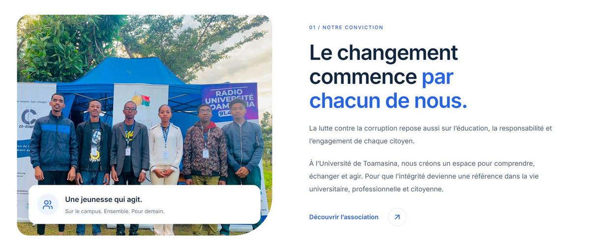

Écran 01
Page d'accueil
Un message d'accroche clair et un accès direct à l'adhésion.
Le site de présentation du projet Co-Rompre : page d'accueil, actualités, formulaire de contact et espace de doléances. Je l'ai conçu et réalisé, et je gère aussi la page Facebook du projet.
Le site de présentation du projet Co-Rompre : page d'accueil, actualités, formulaire de contact et espace de doléances. Je l'ai conçu et réalisé, et je gère aussi la page Facebook du projet.
Les captures commentées présentent les fonctionnalités et les parcours disponibles dans ce projet.
Chaque capture ci-dessous explique une page, une fonction ou un moment important du projet.
Un message d'accroche clair et un accès direct à l'adhésion.

Un article mis en avant avec sa photo, pour suivre la vie du projet.

Deux formulaires pour écrire à l'équipe ou signaler un problème.